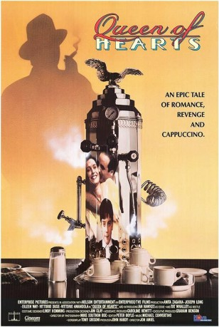
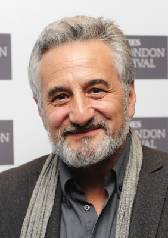

#11316 Liebe, Rache, Cappuccino
Alternativ: Queen of Hearts (Englischer Titel)
 
 IMDB-Wertung: 7.0 / 10
IMDB-Wertung: 7.0 / 10  Metascore: 0
Metascore: 0 
Einwanderer Danilo (Joseph Long) lebt mit Frau Rosa (Anita Zagaria) und Sohn Eddie in London, wo er ein florierendes Café betreibt. Eines Tages taucht sein ehemaliger Nebenbuhler Barbariccia (Vittorio Amandola) auf, um Danilo zu ruinieren: Und prompt verliert Danilo im Kartenspiel sein Hab und Gut...\r Aus der Sicht des kleinen Eddie erzählt Jon Amiel ("Copykill") eine herrlich schnurrige, optisch delikate Immigrantensaga.
Jahr: 1989
Dauer: 107 Minuten
FSK: 12
Land: England Studio: Concorde VideoTonspuren:
Untertitel:
Auflösung: SD (720x404) Größe: 957 MB
Genre: Komödie
Regisseur: Jon Amiel
Drehbuch: Tony Grisoni
Soundtrack: Michael Convertino
Darsteller:
- Vittorio Duse als
 Joseph Long als
Joseph Long als - Vittorio Amandola als
 Ronan Vibert als
Ronan Vibert als - Sidney Kean als
- Anna Pernicci als
- Ian Hawkes als
-  Henry Goodman als
- Cliff Parisi als
- Anita Zagaria als
- Eileen Way als
- Roberto Scateni als
- Stefano Spagnoli als
- Alec Bregonzi als
- Matilda Thorpe als
- Anthony Manzoni als
- Ray Marioni als
- Sarah Hadaway als
- Jimmy Lambert als
- Frank Rozelaar-Green als
- Lee Simpson als
- Jason Rush als
- Frank Coda als
- Lino Omoboni als
- Michael Mears als
- Tat Whalley als
- Nicola Kimber als
- Paul Casimir als
- Jane Hollowood als
- Melena Noia als
- Rhys Brock als
Datei: X:\1989\Liebe, Rache, Cappuccino (1989, FSK12, 720x404).mkv seit 18.06.2019
Festplatte: Gemischt-01+Anime
 Es gibt insgesamt 54 Filme in der Gruppe '1989'
Es gibt insgesamt 54 Filme in der Gruppe '1989'